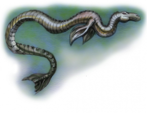

{% extends '_layout.html' %}
{% block title %}Cryptid Catalog | Encyclopedia{% endblock %}
{% block body %}
- BACK
- MAMLAMBO
- Type: Aquatic

- The mamlambo is a cryptid South African creature of the Mzintlava River. This cryptid is notorious for dragging its victims to the bottom of the river and feasting on its brains.
Sightings tell that the creature is 6-7 ft in length and resembles a serpent-like fish with a horse-shaped head and razor-sharp, long, pointed teeth.
{% endblock %}